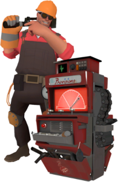

Arsenal

Espingarda

Pistola

Chave inglesa
O Engenheiro é um texano amável e de fala mansa de Bee Cave, Texas , EUA , com interesse em todas as coisas mecânicas. Ele é especialista em construir e manter Edifícios que fornecem suporte para sua equipe, ao invés de lutar na linha de frente, tornando-o o mais adequado para defesa. Os vários dispositivos do Engineer incluem a Sentry Gun , uma torre automática que atira em qualquer inimigo ao alcance, o Dispenser , um dispositivo que restaura a saúde e a munição de companheiros de equipe próximos e Teleporters que transportam rapidamente os jogadores do ponto A ao ponto B.
Como os dispositivos engenhosos do Engineer estão sob constante ameaça de explosivos e espiões inimigos tortuosos , um bom Engineer deve manter seu equipamento sob vigilância e consertá-lo com sua chave o tempo todo. Quando o Engineer precisa sujar as mãos, seu trio de armas genéricas, mas capazes , junto com a ajuda de seu útil hardware, o torna mais do que capaz de se defender em uma luta. Se necessário, o Engineer pode até pegar e transportar construções construídas para realocá-las em locais mais favoráveis.
Embora geralmente visto como uma classe defensiva, o Engineer tem uma seleção de armas de alta tecnologia que lhe permitem destruir projéteis ou construir armas de implantação mais rápida e menos danosas.Sentry Guns, que lhe dão grande utilidade nas linhas de frente também. Seus teletransportadores também são um ponto chave para o sucesso do time ofensivo e defensivo, permitindo que classes mais lentas e pesadas cheguem à linha de frente mais rapidamente.

O Engenheiro é dublado por Grant Goodeve